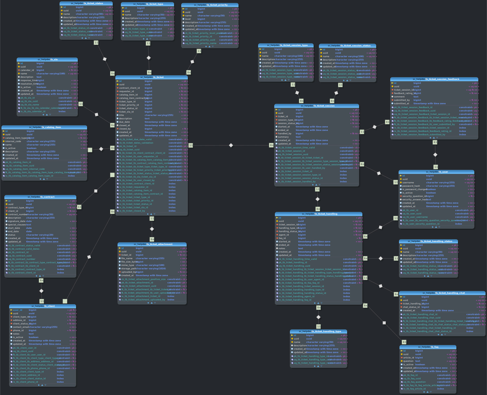

Documentação de Modelagem Relacional de Banco de Dados
Versões
| Data | Versão | Descrição | Responsáveis |
|---|---|---|---|
| 28/06/2025 | 0.1 | Criação do documento | Maelton Lima dos Santos |
| 30/06/2025 | 0.2 | Adiciona estrutura do documento | Maelton Lima dos Santos |
| 30/06/2025 | 0.3 | Adiciona gerenciamento de autenticacao | Maelton Lima dos Santos |
| 30/06/2025 | 0.4 | Adiciona gerenciamento de produtos | Maelton Lima dos Santos |
| 30/06/2025 | 0.5 | Adiciona gerenciamento de clientes | Maelton Lima dos Santos |
| 01/07/2025 | 0.6 | Adiciona gerenciamento de colaboradores | Maelton Lima dos Santos |
| 01/07/2025 | 0.7 | Adiciona gerenciamento de contratos | Maelton Lima dos Santos |
| 01/07/2025 | 0.8 | Adiciona gerenciamento de slas | Maelton Lima dos Santos |
| 01/07/2025 | 0.9 | Adiciona gerenciamento de chamados | Maelton Lima dos Santos |
| 01/07/2025 | 0.10 | Adiciona gerenciamento de chat | Maelton Lima dos Santos |
| 01/07/2025 | 0.11 | Adiciona gerenciamento de faq | Maelton Lima dos Santos |
| 01/07/2025 | 0.12 | Adiciona gerenciamento de feedback | Maelton Lima dos Santos |
| 01/07/2025 | 0.13 | Adiciona gerenciamento de audit | Maelton Lima dos Santos |
| 01/07/2025 | 1.0 | Adiciona modelo relacional | Maelton Lima dos Santos |
Descrição
Este documento apresenta a modelagem relacional do banco de dados do sistema BRISA Helpdesk, com o objetivo de descrever a estrutura lógica das tabelas, suas relações, restrições e propósitos dentro da aplicação.
Este documento será atualizado conforme novas entidades forem sendo adicionadas à base de dados e mudanças forem realizadas na estrutura existente.
Modelagem Completa

Principais Módulos da Aplicação
1. Gerenciamento de Autenticação
1.1 Modelo Conceitual
erDiagram
Usuario }o--o| Pergunta_Seguranca : pode_ter
Usuario }o--o{ Papel_no_Sitema : tem
Papel_no_Sitema }o--o{ Privilegio_de_Uso : tem
Usuario }o--o{ Servidor_oAuth : pode_autenticar_via
Usuario ||--o| Cliente : especializa
Usuario ||--o| Usuario_de_Cliente : especializa
Usuario ||--o| Colaborador : especializa
Cliente ||--o{ Usuario_de_Cliente : pode_ter1.2 Descrição
O módulo de Gerenciamento de Autenticação gerencia a autenticação e autorização de usuários no sistema BRISA Helpdesk. Ele suporta três tipos de usuários que podem fazer login: Client (clientes, especialização em tb_client), ClientUser (usuários vinculados a clientes, especialização em tb_client_user), e Employee (funcionários, especialização em tb_employee).
O módulo inclui a gestão de credenciais de login, perguntas de segurança para recuperação de contas, papéis (roles) e privilégios para controle de acesso, além de suporte a autenticação via provedores OAuth2/OpenID Connect. Este módulo assegura acesso seguro e controlado às funcionalidades do sistema, com suporte a associações de papéis e permissões, bem como integração com provedores externos de autenticação.
As principais entidades incluem:
- Usuários (tb_user): Armazena informações de autenticação dos usuários (Client, ClientUser, Employee), como nome de usuário, hash de senha e status da conta.
- Perguntas de Segurança (tb_security_question): Contém perguntas usadas para recuperação de contas, associadas a respostas criptografadas por usuário.
- Papéis (tb_role): Define os papéis do sistema que determinam níveis de acesso.
- Privilégios (tb_privilege): Armazena permissões atômicas associadas a papéis.
- Provedores OAuth (tb_oauth_provider): Configurações para autenticação via provedores externos, como Google ou Microsoft.
- Associações de Usuários com Provedores OAuth (tb_user_oauth_provider): Relaciona usuários a contas externas de autenticação.
- Relações M:N: Incluem associações entre usuários e papéis (tb_user_role) e entre papéis e privilégios (tb_role_privilege).
- Tipos de Usuários:
- Client: Representa clientes (pessoa física ou jurídica) registrados em tb_client.
- ClientUser: Usuários vinculados a clientes, registrados em tb_client_user, com login próprio por cliente.
- Employee: Funcionários da empresa, registrados em tb_employee.
1.3 Modelo Relacional
{kind=link}
2. Gerenciamento de Produtos
2.1 Modelo Conceitual
erDiagram
Item_de_Catalogo }o--|| Tipo : tem
Item_de_Catalogo ||--o| Produto : especializa
Item_de_Catalogo ||--o| Servico : especializa
Item_de_Catalogo }o--o{ Contrato : pode_estar_associado_a
Item_de_Catalogo }o--o{ SLA : pode_estar_associado_a2.2 Descrição
O módulo de Gerenciamento de Produtos é responsável por gerenciar os itens do catálogo do sistema BRISA Helpdesk, que incluem produtos e serviços oferecidos aos clientes. Ele organiza os itens do catálogo em tipos específicos e permite a especialização em produtos (físicos ou não) e serviços (físicos ou não).
Este módulo é essencial para associar itens do catálogo a contratos (por meio da tabela tb_contract_catalog_item) e a acordos de nível de serviço (SLAs, por meio da tabela tb_sla_catalog_item), garantindo que os serviços e produtos disponíveis sejam corretamente classificados, rastreados e vinculados às obrigações contratuais e de atendimento do sistema.
As principais entidades incluem:
- CatalogItem (tb_catalog_item): Tabela base que armazena informações gerais sobre itens do catálogo, como produtos e serviços.
- CatalogItemType (tb_catalog_item_type): Define os tipos de classificação para itens do catálogo (e.g., "Hardware", "Software", "Suporte Técnico").
- Product (tb_product): Especialização de CatalogItem que representa produtos, com a distinção de serem físicos ou não.
- Service (tb_service): Especialização de CatalogItem que representa serviços, com a distinção de serem físicos ou não.
- Contract (tb_contract): Representa contratos associados a clientes, que podem incluir múltiplos itens do catálogo.
- SLA (tb_sla): Define acordos de nível de serviço, que podem estar associados a itens do catálogo para especificar tempos de resposta e resolução.
2.3 Modelo Relacional
{kind=link}
3. Gerenciamento de Clientes
3.1 Modelo Conceitual
erDiagram
Cliente }o--|| Tipo : tem
Cliente }o--|| Status : tem
Cliente }o--|| Endereco : tem
Cliente }o--|| Telefone : tem
Usuario ||--o| Cliente : especializa
Cliente ||--o| Cliente_CPF : especializa
Cliente ||--o| Cliente_CNPJ : especializa
Cliente ||--o{ Usuario_de_Cliente : associa
Usuario ||--o| Usuario_de_Cliente : especializa
Cliente }o--o{ Setor_de_Mercado : associado_a
Cliente }o--o{ Segmento_de_Mercado : associado_a
Cliente_CNPJ }o--|| CompanyCategory : tem3.2 Descrição
O módulo de Gerenciamento de Clientes é responsável por gerenciar as informações dos clientes no sistema BRISA Helpdesk, incluindo pessoas físicas (tb_individual_client) e jurídicas (tb_corporate_client), bem como usuários vinculados a clientes (tb_client_user). Ele categoriza os clientes por tipo, status, setores de negócios e segmentos, além de associar endereços e números de telefone.
Este módulo permite o rastreamento detalhado de informações de contato, classificações de clientes e suas associações com setores e segmentos de negócios, garantindo uma gestão eficiente das relações com os clientes.
As principais entidades incluem:
- Client (tb_client): Tabela base para todos os clientes, vinculada a um usuário (tb_user) e associada a um tipo, status, endereço e telefone.
- ClientType (tb_client_type): Define categorias de clientes (e.g., "Premium", "Standard").
- ClientStatus (tb_client_status): Define os status possíveis para clientes (e.g., "Ativo", "Inativo").
- IndividualClient (tb_individual_client): Especialização de Client para pessoas físicas, com informações como CPF e data de nascimento.
- CorporateClient (tb_corporate_client): Especialização de Client para empresas, com informações como CNPJ e razão social.
- Address (tb_address): Armazena informações de endereços físicos dos clientes.
- Phone (tb_phone): Armazena números de telefone associados aos clientes.
- ClientUser (tb_client_user): Representa usuários vinculados a clientes, com login próprio por cliente.
- BusinessSector (tb_business_sector): Define setores de negócios (e.g., "Tecnologia", "Varejo") associados a clientes.
- BusinessSegment (tb_business_segment): Define segmentos de negócios (e.g., "Software", "E-commerce") associados a clientes.
- CompanyCategory (tb_company_category): Define categorias de empresas com base no tamanho (número de funcionários).
3.3 Modelo Relacional
{kind=link}
4. Gerenciamento de Colaboradores
4.1 Modelo Conceitual
erDiagram
Usuario ||--o| Colaborador : especializa
Colaborador }o--o| Telefone : pode_ter
Colaborador }o--o| Endereco : pode_ter
Colaborador }o--|| Cargo : ocupa
Colaborador }o--|| Status : tem
Colaborador }o--o| Departamento : pode_ter
Colaborador }o--o| Branch : pode_ter
Colaborador }o--o{ Horario_de_Trabalho : associado_a
Cargo }o--o{ JobSpecialization : pode_ter
Colaborador |o--o{ Colaborador : pode_supervisionar
Branch }o--|| Endereco : tem4.2 Descrição
O módulo de Gerenciamento de Colaboradores é responsável por gerenciar as informações dos funcionários (employees) do sistema BRISA Helpdesk. Ele inclui detalhes sobre cargos, especializações, departamentos, filiais, status dos funcionários, horários de trabalho e informações de contato, como endereços e telefones.
Este módulo permite o rastreamento de hierarquias (supervisores), alocação de cargos e especializações, associação a departamentos e filiais, bem como a definição de horários de trabalho semanais, garantindo uma gestão eficiente dos recursos humanos da organização.
As principais entidades incluem:
- Employee (tb_employee): Tabela base para funcionários, vinculada a um usuário (tb_user) e associada a cargos, departamentos, filiais, status e informações de contato.
- JobPosition (tb_job_position): Define os cargos disponíveis na organização (e.g., "Técnico de Suporte", "Gerente").
- JobSpecialization (tb_job_specialization): Define especializações que podem ser associadas a cargos (e.g., "Redes", "Segurança").
- Department (tb_department): Representa departamentos dentro da organização (e.g., "TI", "RH").
- Branch (tb_branch): Representa filiais da empresa, cada uma associada a um endereço.
- EmployeeStatus (tb_employee_status): Define os status possíveis para funcionários (e.g., "Ativo", "Demitido").
- WorkSchedule (tb_work_schedule): Define horários de trabalho semanais (e.g., dias da semana e horários).
- User (tb_user): Entidade de autenticação que Employee especializa, contendo credenciais de login.
- Address (tb_address): Armazena endereços físicos associados a funcionários e filiais.
- Phone (tb_phone): Armazena números de telefone associados aos funcionários.
4.3 Modelo Relacional
{kind=link}
5. Gerenciamento de Contratos
5.1 Modelo Conceitual
erDiagram
Contrato }o--|| Status : tem
Contrato }o--|| Tipo : tem
Contrato }o--|| Cliente : tem
Contrato }o--o{ Produto_Servico : possui
Produto_Servico }o--o{ SLA : pode_ter
Contrato }o--o{ Usuario_de_Cliente : pode_estar_associado_a
Cliente ||--o{ Usuario_de_Cliente : pode_ter
Contrato }o--o{ SLA : pode_estar_associado_a5.2 Descrição
O módulo de Gerenciamento de Contratos é responsável por gerenciar os contratos associados aos clientes no sistema BRISA Helpdesk. Ele permite a criação, rastreamento e categorização de contratos, vinculando-os a clientes, usuários relacionados aos clientes (ClientUsers), itens do catálogo (produtos ou serviços) e acordos de nível de serviço (SLAs).
Este módulo assegura a gestão eficiente das obrigações contratuais, incluindo status, tipos de contratos, associações com itens do catálogo e SLAs, além de permitir que usuários vinculados a clientes (ClientUsers) sejam associados a contratos para facilitar a gestão de interações.
As principais entidades incluem:
- Contract (tb_contract): Tabela base para contratos, associada a um cliente, tipo de contrato, status, itens do catálogo, SLAs e usuários vinculados a clientes.
- ContractStatus (tb_contract_status): Define os status possíveis para contratos (e.g., "Ativo", "Cancelado").
- ContractType (tb_contract_type): Define os tipos de contratos (e.g., "Manutenção", "Suporte").
- Client (tb_client): Representa os clientes associados aos contratos.
- ClientUser (tb_client_user): Representa usuários vinculados a clientes, que podem ser associados a contratos para gerenciar interações específicas.
- CatalogItem (tb_catalog_item): Representa itens do catálogo (produtos ou serviços) vinculados aos contratos.
- SLA (tb_sla): Define acordos de nível de serviço, associados a itens do catálogo vinculados a contratos.
- ContractCatalogItem (tb_contract_catalog_item): Tabela de junção que associa contratos a itens do catálogo, permitindo múltiplos itens por contrato e múltiplos contratos por item.
5.3 Modelo Relacional
{kind=link}
6. Gerenciamento de SLAs
6.1 Modelo Conceitual
erDiagram
SLA }o--|| Status : tem
SLA }o--|| Tipo : tem
SLA }o--o{ Item_de_Catalogo : pode_estar_associada_a
SLA }o--o{ Contrato : pode_estar_associada_a
SLA }o--o{ Tipo_de_Chamado : pode_estar_associada_a
SLA ||--o{ Calendario : tem
Calendario }o--o{ Excecao : pode_ter6.2 Descrição
O módulo de Gerenciamento de SLAs é responsável por gerenciar os Acordos de Nível de Serviço (SLAs) no sistema BRISA Helpdesk. Ele permite a criação, rastreamento e categorização de SLAs, que definem os tempos de resposta e resolução para serviços ou produtos associados a contratos, itens do catálogo ou tipos de chamados.
Os SLAs são vinculados a itens do catálogo (produtos ou serviços), contratos (indiretamente via itens do catálogo), e tipos de chamados para especificar os compromissos de atendimento. Cada SLA é associada a um calendário (tb_calendar) que define os períodos de operação, e esses calendários podem ter exceções (tb_calendar_exception) para feriados ou eventos específicos.
Este módulo assegura a gestão eficiente dos acordos de nível de serviço, incluindo status, prioridades (definidas na tabela tb_sla_priority), associações com itens do catálogo, contratos, tipos de chamados e calendários.
As principais entidades incluem:
- SLA (tb_sla): Tabela base para acordos de nível de serviço, associada a um status, prioridade, itens do catálogo, tipos de chamados, contratos (via itens do catálogo) e calendário.
- SLAPriority (tb_sla_priority): Define as prioridades de SLAs (e.g., "Alta", "Baixa"), anteriormente referida como tipo de SLA.
- CatalogItem (tb_catalog_item): Representa itens do catálogo (produtos ou serviços) que pode ser associados aos SLAs.
- Contract (tb_contract): Representa contratos associados a SLAs indiretamente via itens do catálogo ou que podem ser associados aos SLAs.
- TicketType (tb_ticket_type): Define tipos de chamados (e.g., "Incidente", "Solicitação") que podem ser associados aos SLAs.
- Calendar (tb_calendar): Define os períodos operacionais dos SLAs (e.g., horários de trabalho).
- CalendarException (tb_calendar_exception): Define exceções nos calendários, como feriados ou eventos específicos.
6.3 Modelo Relacional
{kind=link}
7. Gerenciamento de Chamados
7.1 Modelo Conceitual
erDiagram
Chamado }o--|| SLA : tem
Chamado }o--|| Contrato : tem
Chamado }o--|| Cliente_do_Contrato : tem
Chamado }o--|| Solicitante : tem
Chamado }o--|| Produto_Servico : tem
Chamado }o--|| Tipo : tem
Chamado ||--o{ Anexo : pode_ter
Chamado ||--o{ Sessao : pode_ter
Sessao }o--|| Tipo : tem
Sessao }o--|| Status : tem
Sessao ||--o| Feedback : pode_ter
Sessao ||--o{ Atendimento : pode_ter
Atendimento }o--|| Agente : tem
Atendimento }o--|| Tipo_Atendimento : tem
Atendimento }o--|| Status : tem
Atendimento ||--o{ Chat : pode_ter
Atendimento ||--o{ FAQ : pode_ter7.2 Descrição
O módulo de Gerenciamento de Chamados é responsável por gerenciar os chamados (tickets) no sistema BRISA Helpdesk. Ele permite a criação, rastreamento e resolução de chamados, associando-os a clientes, usuários vinculados a clientes (ClientUsers), funcionários, SLAs, itens do catálogo e anexos. Cada chamado pode ter múltiplas sessões (tb_session), que representam interações contínuas para resolução.
Cada sessão pode ter um atendimento (tb_interaction), que é classificado por um tipo de interação (e.g., "Telefone", "E-mail"). Um atendimento pode, opcionalmente, estar associado a um chat (tb_chat), uma FAQ (tb_faq) ou ambos, mas também pode não ter nenhum dos dois.
Este módulo assegura a gestão eficiente dos chamados, incluindo status, tipos, associações com SLAs, itens do catálogo, sessões, atendimentos e anexos.
7.3 Modelo Relacional
 As relações foram extramamente reduzidas, observe as foreign keys para ter maior precisão.
{kind=link}
8. Gerenciamento de Chats
8.1 Modelo Conceitual
erDiagram
Chat }o--|| Status : tem
Chat }o--|| Atendimento : tem
Chat ||--o{ Mensagem : pode_ter
Mensagem }o--|| Usuario : tem
Mensagem ||--o{ Anexo : pode_ter8.2 Descrição
O módulo de Gerenciamento de Chats é responsável por gerenciar as conversas de chat no sistema BRISA Helpdesk, que ocorrem como parte de atendimentos (tb_ticket_handling) associados a chamados (tickets). Os chats são vinculados a interações específicas, que por sua vez estão relacionadas a sessões de chamados.
Este módulo assegura a gestão eficiente das conversas, permitindo o rastreamento de interações de suporte e a associação com os respectivos chamados e usuários.
8.3 Modelo Relacional
{kind=link}
9. Gerenciamento de Base de Conhecimento
9.1 Modelo Conceitual
erDiagram
FAQ }o--|| Artigo : tem
Artigo }o--o{ Categoria : pode_ter
Artigo }o--o{ Tag : pode_ter
9.2 Descrição
O módulo de Gerenciamento de FAQ (Base de Conhecimento) é responsável por gerenciar as perguntas frequentes (FAQs) no sistema BRISA Helpdesk, que compõem a base de conhecimento utilizada para suporte e resolução de chamados.
As FAQs são organizadas por categorias e podem ser referenciadas em atendimentos (tb_ticket_handling) associados a sessões de chamados. Cada FAQ pode ser criada ou atualizada por usuários.
Este módulo assegura a gestão eficiente do conhecimento, permitindo o rastreamento de FAQs, suas categorias e associações com atendimentos em chamados.
9.3 Modelo Relacional
{kind=link}
10. Gerenciamento de Feedback
10.1 Modelo Conceitual
erDiagram
Feedback_de_Sessao |o--|| Usuario : tem
Feedback_de_Sessao |o--|| Valor_de_Avaliacao : tem
Feedback_de_Sessao |o--|| Sessao_de_Chamado : tem
10.2 Descrição
O módulo de Gerenciamento de Feedback é responsável por gerenciar os feedbacks fornecidos por usuários no sistema BRISA Helpdesk. Os feedbacks são associados às sessões de chamado e permitem que solicitantes avaliem a qualidade do atendimento ou serviço prestado.
Este módulo assegura a coleta e rastreamento de avaliações, vinculando-as aos respectivos chamados e usuários, para melhorar a experiência do cliente e a eficiência do suporte.
10.3 Modelo Relacional
{kind=link}
11. Gerenciamento de Auditoria
11.1 Modelo Conceitual
erDiagram
Auditoria |o--|| Tabela : tem
Auditoria |o--|| Coluna : tem
Auditoria |o--|| Identificador_de_Registro : tem
Auditoria |o--|| Valor_Anterior : tem
Auditoria |o--|| Novo_Valor : tem
Auditoria |o--|| Responsavel : tem
Auditoria |o--|| Data : tem 11.2 Descrição
O módulo de Gerenciamento de Auditoria é responsável por gerenciar os registros de auditoria no sistema BRISA Helpdesk. Ele rastreia as ações realizadas por usuários.
Os registros de auditoria (tb_general_audit) capturam eventos relacionados a alterações ou exclusões no sistema, associados a um usuário específico, garantindo transparência e rastreabilidade das operações.
Este módulo assegura a gestão eficiente dos logs de auditoria, permitindo monitorar atividades realizadas por diferentes tipos de usuários.
{kind=link}